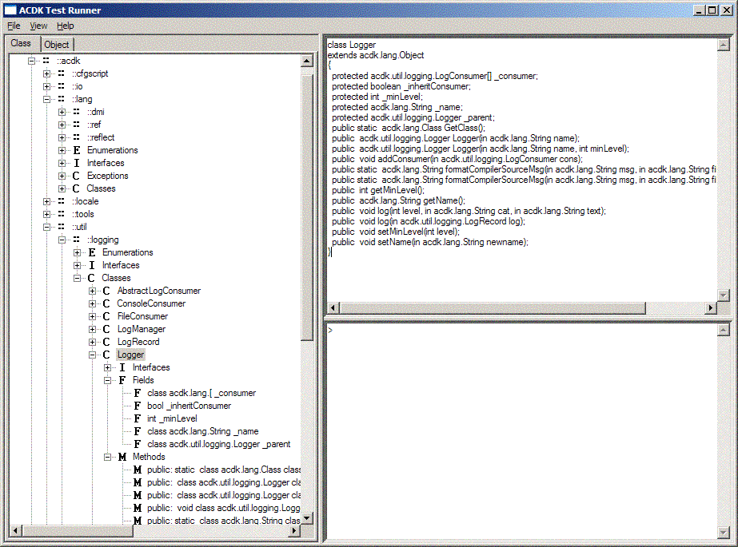
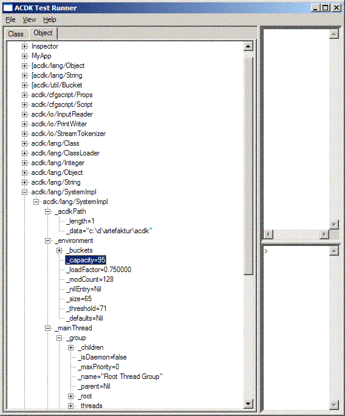

ACDK
ACDK
 Packages
Packages
 ACDK WX
ACDK WX
 acdk_wx Handbook
acdk_wx Handbook
 Applications
Applications
 Inspector
Inspector
|
| GuiTestRunner | Inspector | |
acdk_wx Inspector |
| ACDK |
|
Artefaktur Component Development Kit |
|
|
|
|
Inspector is is type explorer/class browser, a heap/object explorer and a interactive CfgScript console. Inspector is written using a mixture of C++ and CfgScript.
Content of this chapter: |
acdk/bin/acdkcfgscript[_d] acdk/acdk_core/cfg/csf/lib/inspect/Inspector.csf
acdk/acdk_core/cfg/csf/lib/inspect/Inspector.csf. acdk::wx::inspector::ClassTreeCtrl) is a traditional class browser.
acdk::wx::inspector::ClassTreeCtrl) is a traditional class browser.

acdk::wx::inspector::ObjectTreeCtrl) display all root objects (Objects, which are not itself member
of another Object).

acdk::wx::inspector::CfgScriptConsole) can invoke the the garbage collector or
invoke fragments of CfgScript code.|
| GuiTestRunner | Inspector | |